Breaking Bad: El
ascenso de Heisenberg
La transformación de un hombre común en uno de los
criminales más temidos.
¿De qué trata Breaking Bad?
Introducción
Breaking Bad, creada por Vince Gilligan, es una aclamada serie dramática que explora la inquietante transformación de Walter White, un profesor de química que, tras recibir un diagnóstico de cáncer terminal, se ve empujado al límite.
Lo que comienza como una medida desesperada para asegurar el futuro económico de su familia deriva en un relato intenso sobre la evolución moral y la ambición, mostrando cómo un hombre común se convierte en un complejo antihéroe. A través de una narrativa profunda y psicológica, la historia redefine los límites entre el bien y el mal, consolidándose como una obra fundamental de la cultura popular que transformó el género dramático en la televisión.
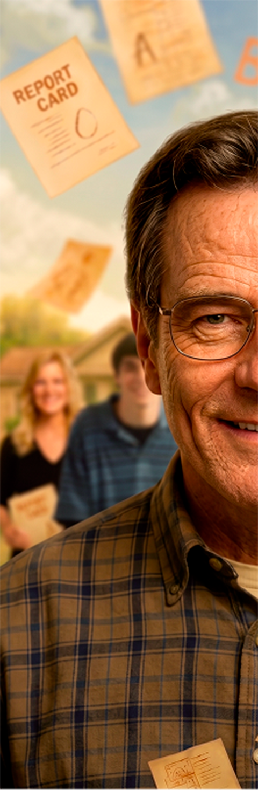
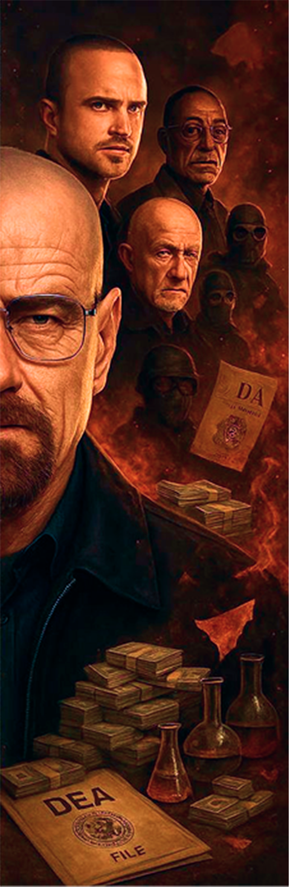
Ficha técnica
Se estrenó el 20 de enero de 2008 por AMC, cambiando la televisión para siempre.
62 episodios repartidos en 5 temporadas llenas de adrenalina y química pura.
Una mezcla perfecta de drama criminal, suspenso y humor negro.
Vince Gilligan ideó la serie con la premisa de transformar a Mr. Chips en Scarface.
El Ascenso de Breaking Bad
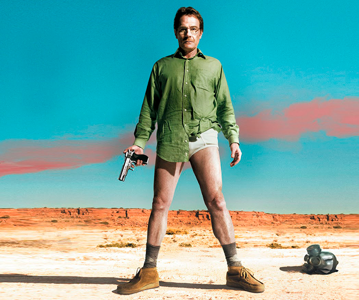
Un Comienzo Incierto
2008- El Estreno: El Estreno: La serie debutó en la cadena AMC el 20 de enero de 2008. Inicialmente, no fue un fenómeno masivo y tuvo que luchar por encontrar su identidad en el saturado mercado del cable.
- Huelga de Guionistas: Su primera temporada se vio truncada por la huelga de guionistas de Hollywood, lo que resultó en una producción de solo 7 episodios.
- El "Boca a Boca": A pesar de los obstáculos, la narrativa intensa y la transformación de Walter White comenzaron a generar una base de seguidores leales que recomendaban la serie.
El Punto de Inflexión
2010- Crisis de Continuidad: Al llegar a la tercera temporada, AMC consideró seriamente cancelar la serie debido a que los índices de audiencia no terminaban de despegar.
- Negociaciones Críticas: Ante la incertidumbre, la productora Sony Pictures Television comenzó a evaluar la posibilidad de vender el show a otras cadenas para asegurar su supervivencia.
- Apuesta Estratégica: Finalmente, AMC decidió renovarla, un movimiento que transformó a Breaking Bad de una serie "en riesgo" a un pilar estratégico para la cadena.
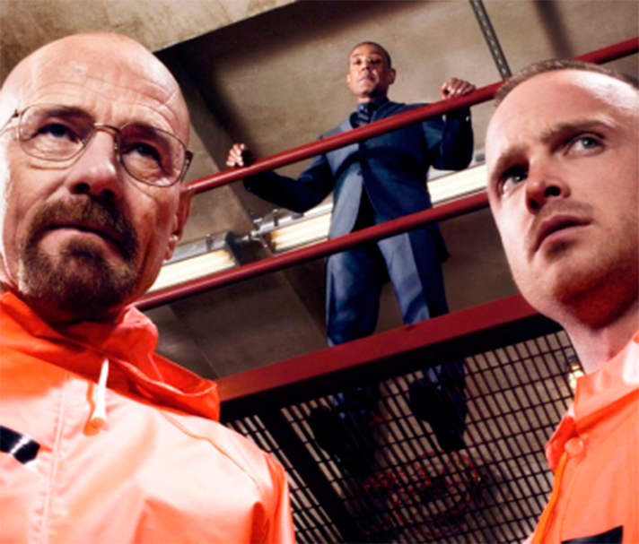
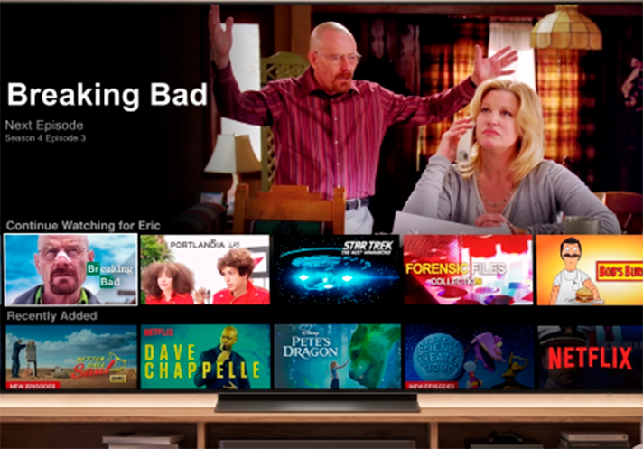
La Revolución del Streaming (El "Efecto Netflix")
2012- Efecto Netflix: El verdadero impulso llegó cuando la serie se incorporó al catálogo de Netflix.
- Cosecha de Premios: Se convirtió en la serie más premiada de la historia (Guinness).
El Fin de una Era
2013- Estrategia de Cierre: Para aumentar la expectativa, la quinta y última temporada se dividió en dos partes emitidas en años consecutivos (2012 y 2013).
- Récord Histórico: : El episodio final, emitido en 2013, se convirtió en un evento cultural masivo, alcanzando más de 10 millones de espectadores.
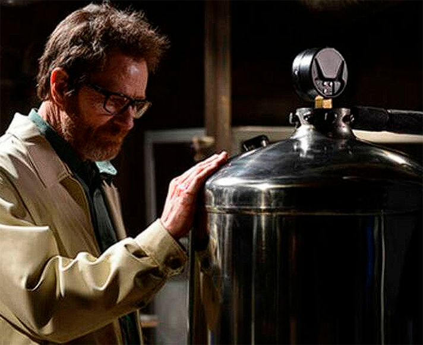
Interpretado por Bryan Cranston
Profesor de química que se vuelve narcotraficante. Su arco sigue su descenso moral de padre de familia a criminal despiadado.
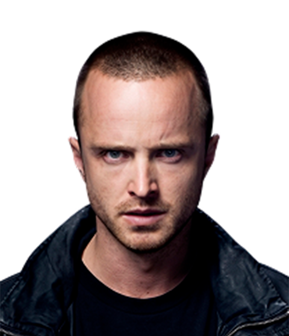
Interpretado por Aaron Paul
Joven socio de Walt cuyo arco va de criminal despreocupado a víctima culpable. Su inocencia es el contrapunto de Walter.
Interpretada por Anna Gunn
Esposa de Walt y figura de moralidad. Su arco va de esposa preocupada a cómplice forzada para proteger a su familia.
Interpretado por Dean Norris
Agente de la DEA y cuñado de Walt. Representa la ley y su cacería de Heisenberg provee la tensión permanente.
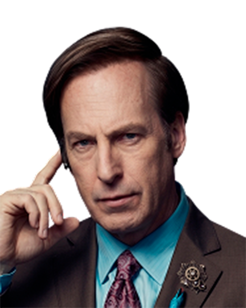
Interpretado por Bob Odenkirk
Abogado oportunista que sirve de puente entre mundos. Blanquea dinero y encuentra soluciones legales (o no).
Episodios destacados
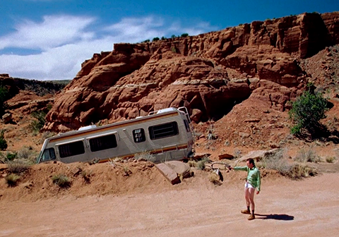
Pilot
El episodio piloto marca el inicio de toda la historia y presenta la transformación inicial de Walter White. Tras recibir su diagnóstico de cáncer, Walter toma la decisión de entrar al mundo del narcotráfico junto a Jesse Pinkman. Este capítulo establece el tono de la serie y plantea el conflicto central.
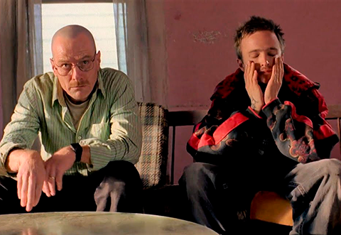
Grilled | Asado a la Parrilla
Walter y Jesse son capturados por Tuco Salamanca. La tensión psicológica domina toda la narrativa, mientras Walter comienza a demostrar su capacidad de manipulación y sangre fría para salir de situaciones extremas.
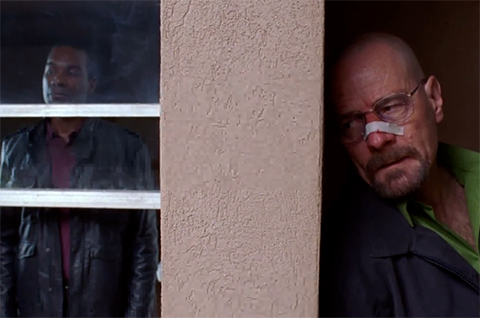
Face Off
El enfrentamiento icónico contra Gus Fring. Este episodio representa un punto de quiebre definitivo donde Walter demuestra hasta dónde está dispuesto a llegar para ganar poder.
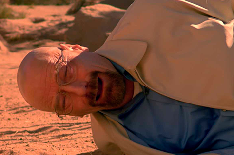
Ozymandias
Considerado uno de los mejores episodios de la televisión, muestra la caída total de Walter White. Las consecuencias de sus decisiones alcanzan su punto máximo afectando a todos.
Say My Name: El Resumen
La esencia de la serie es la transformación de Walter White, su compleja relación con Jesse Pinkman y la tensión constante que define su historia. A través de estos contenidos, vas a poder entender tanto la evolución de los personajes como los puntos más intensos de la trama.

Resumen: El ascenso y caída de Walter White

Repaso de las 5 temporadas y momentos clave
¿Tenés lo necesario para
ser parte del Imperio?
No estamos en el negocio de las suscripciones, estamos en el negocio de los coleccionistas. Unite a nuestra red para recibir lotes exclusivos de información y acceso prioritario a merchandising oficial.
*Advertencia: La mercadería que recibas es 99.1% pura... en términos de calidad de diseño. Si la DEA toca tu puerta, recordá: vos solo estabas comprando una taza de Los Pollos Hermanos.